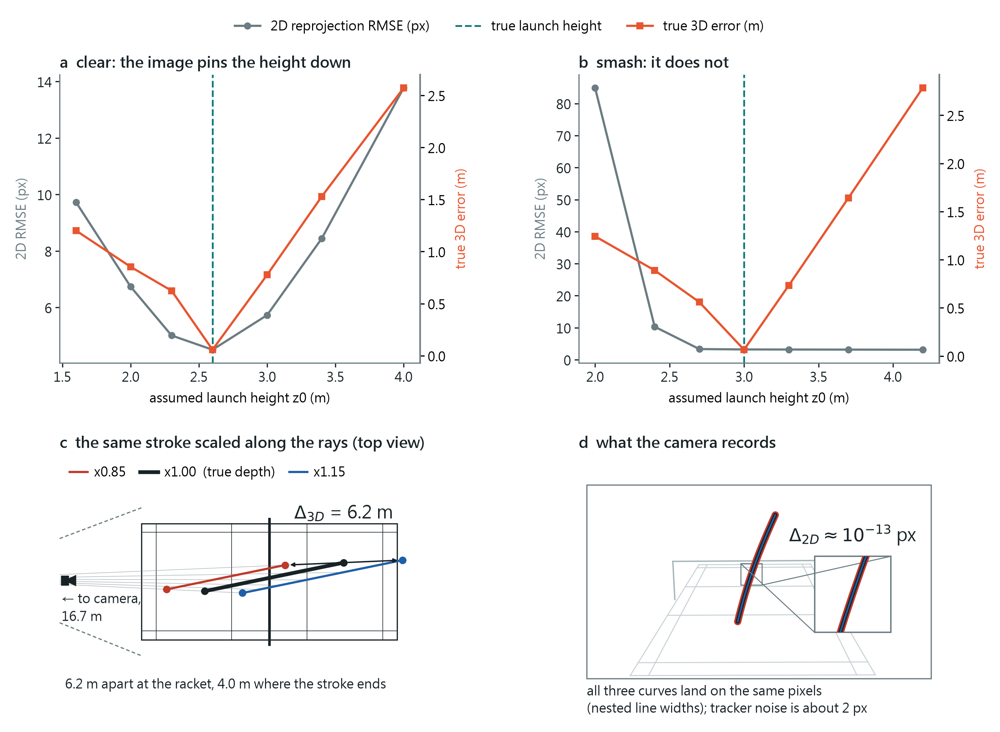
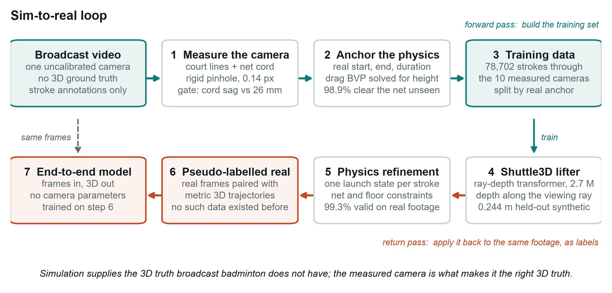
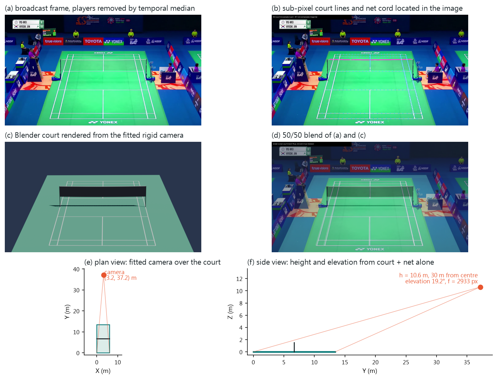
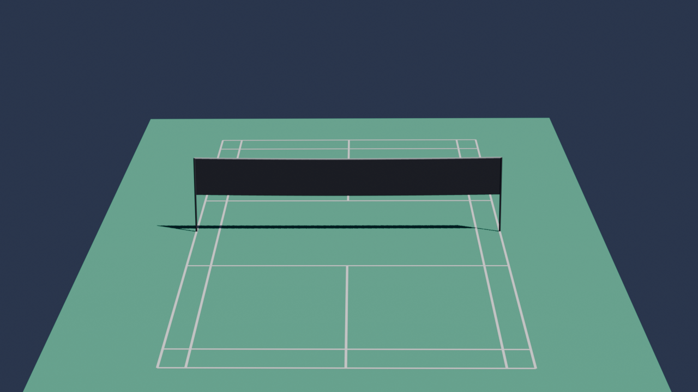
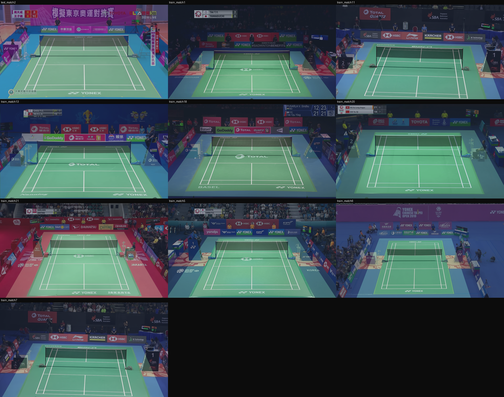
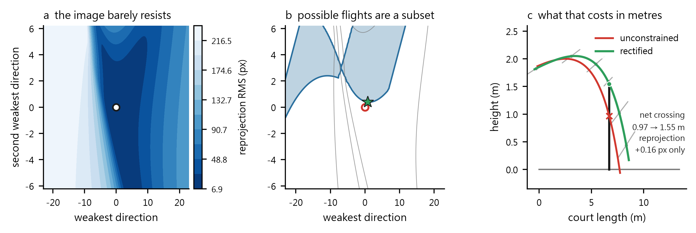
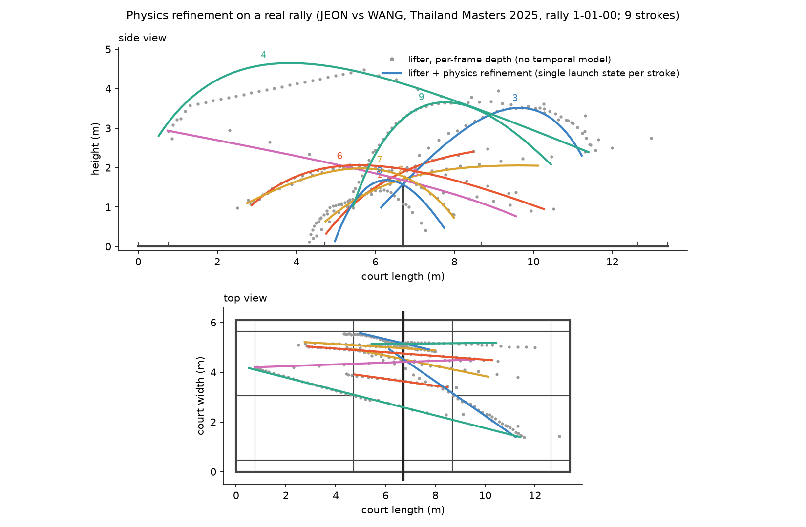
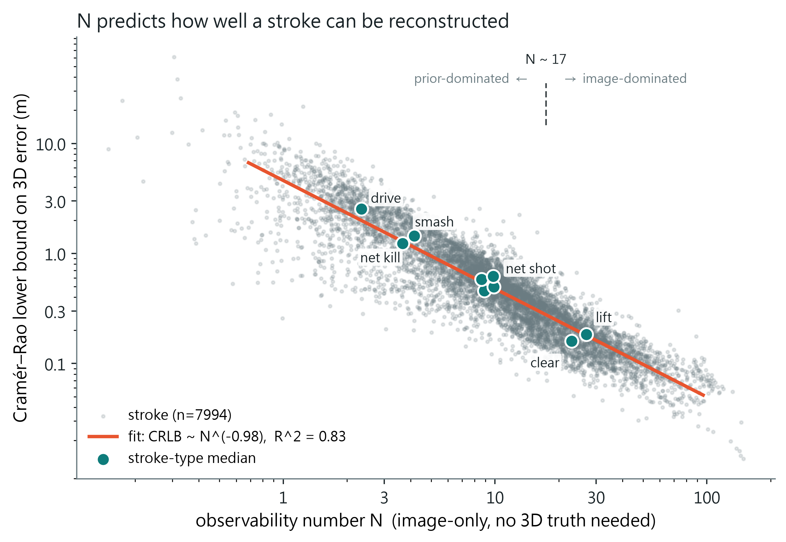
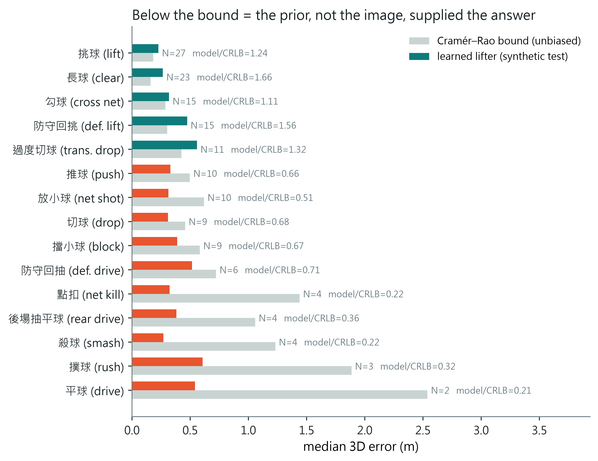
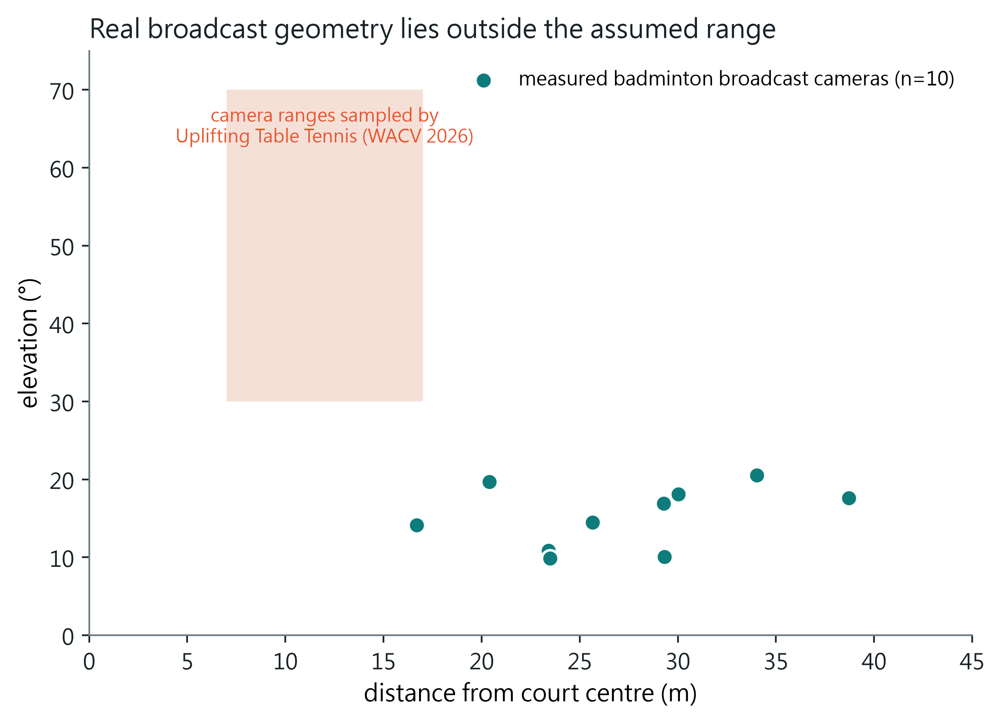

Paper 1 of 2 · Project page · 2026
Recovering the 3D flight of a shuttlecock from one broadcast camera is ill-posed in a way no other ball sport is. The shuttle is featureless and small — 6.9 px across a 1280-wide frame, a streak when it moves — so no frame carries scale. It is fast along the optical axis — a smash is 10–15 nearly straight frames — so the curvature that would fix depth is buried in tracker noise. It never bounces — its only floor contact ends the rally — so the ground-plane anchor that table tennis and tennis rely on does not exist. With no 3D ground truth for broadcast badminton, prior work validates real footage by 2D reprojection alone; on synthetic strokes with known 3D we show that candidates whose 2D residuals differ by 0.2 px differ in 3D error by up to 46×, so the metric cannot see the failure it is meant to catch.
SimTrack3D removes the two bottlenecks that made this unsolvable. Geometry: a court homography leaves focal length undetermined, and we resolve it from the net cord, the one rigid off-plane structure a court has, calibrating thirty-two international broadcast cameras (twenty-two from a corpus with no court annotation) and gating each on the cord's catenary sag, an invariant the fit never sees. Data: instead of sampling flights from assumed ranges we solve aerodynamic boundary-value problems anchored to 13,117 real annotated strokes, producing 77,790 trajectories every one of which clears the cord, and render them through the measured cameras. On this we train Shuttle3D, a ray-depth transformer that supplies the global prior a single view lacks, and pair it with a constrained single-launch-state physics solve that returns a flight the court permits by construction.
Shuttle3D reaches 0.27 m median 3D error on held-out synthetic strokes, unchanged through cameras it never saw, and on smashes beats a faithful MonoTrack re-implementation by 9.6×. On 6,914 real tournament strokes the raw network is physically impossible on 27%, against 82% for MonoTrack; the two-tier estimator is possible on 99.5% at a median price of 0.6 px of reprojection error, endpoint error is 0.84 m against MonoTrack's 3.33 m, and the model transfers unchanged to twenty-two venues it never saw. Finally we derive an image-only observability number N that predicts the Cramér–Rao bound (CRLB ∝ N−0.98, R² = 0.83) and show the lifter beats that unbiased bound by up to 4.7× exactly where N is lowest: a measurement of where the image is answering and where the prior is, and the reason the physical guarantee is enforced rather than monitored.
Deep heatmap trackers such as TrackNet have made 2D localisation of high-speed projectiles reliable.[1, 2, 3] Lifting those tracks into continuous 3D world trajectories remains ill-posed. In classical monocular 3D vision — driving, human mesh recovery — depth ambiguity is resolved through known object dimensions, structural articulation or texture deformation. In broadcast badminton every conventional depth cue vanishes at once.
Small kills the appearance cue. In our measurements a shuttlecock spans about 6.9 px in a 1280-wide broadcast, elongating to 17 px only as a motion streak. It has no surface texture, no discernible orientation and no geometric scale: it behaves as a featureless point mass, so no isolated frame contains depth information at all.
Fast kills the motion cue. Resolving depth along a viewing ray requires trajectory curvature from gravity and drag. A smash lasts roughly 10–15 frames at 30 fps and travels nearly along the optical axis, so the projected track is close to a straight line and the physical curvature is buried in tracker noise.
Never bouncing kills the geometric anchor. In tennis and table tennis a bounce on a calibrated plane fixes one 3D point exactly, and systems such as TT3D are built on it.[4, 5] A shuttlecock is airborne from racket to racket; its only floor contact ends the rally, at a moment where trackers routinely lose it.

Why it stayed unsolved. Two bottlenecks, not one. The first is geometric: a broadcast camera is uncalibrated, and the court lines that are visible all lie on one plane, so they fix a homography but not a focal length — without the focal length, depth along a ray has no metric scale to be recovered into. The second is supervisory: there is no 3D ground truth for broadcast badminton, so nothing could be trained and nothing could be checked except by projecting back to 2D, which Fig. 1 shows is blind to the very error that matters.
SimTrack3D removes both. It measures the camera from the one rigid structure a court has above the plane, the net cord, and it manufactures the missing 3D truth by solving the physics of real strokes rather than sampling flights from assumed ranges. On that footing it runs a two-tier inference: a learned ray-depth prior that supplies what a single view cannot determine, and a constrained physics solve that guarantees the result is a flight the court permits. Every stage is grounded in authentic broadcast geometry and human tactical play.
This section is organised by the problem each literature solves rather than by venue, because the difficulty here is that no single community owns it: the tracker comes from sports vision, the depth ambiguity from monocular geometry, the training data from the sim-to-real literature, the calibration from sports field registration, and the guarantee from constrained estimation.
The 2D half of this problem is solved well enough to build on. TrackNet[1] established the recipe still in use: a heatmap network consuming several consecutive frames so that motion, not appearance, localises an object too small to have texture. Successors extend it with trajectory-aware refinement and rectification[2] and with motion attention[3], and the same architecture family has been retargeted to soccer[13], table tennis[14] and to a sport-agnostic baseline[15]. Speed-accuracy trade-offs for ball detection are surveyed in[16], and the general difficulty of small-object detection and tracking in[17].
What matters for us is that a broadcast shuttlecock is not a point but a streak. Motion blur is treated as a nuisance to be removed in general vision[18], but in racket sports it carries information: BlurBall[19] estimates ball position and blur jointly and shows the streak improves localisation, and blur-aware detection has been applied to broadcast sport directly[20]. Our own measurements on 9,312 annotated shuttlecock positions agree: the streak's long axis grows linearly with image speed while its short axis is constant to 0.20 px, which is what makes exposure self-calibrating from the video alone. Badminton-specific detectors continue to appear[21][22][23], including real-time smash-speed estimation on device[24].
Multi-object tracking metrics and player tracking are adjacent but distinct problems[25][26][27][28]; we use annotation for stroke segmentation rather than tracking players.
Reconstructing 3D ball flight from one view is an established goal with a consistent structure: fit a physical flight model to a 2D track through a calibrated camera. Early table-tennis systems reconstructed trajectories for performance analysis[29][30][31]; robot table tennis needs the same estimate in real time and solves it with filtering[32][33][34]. Multi-camera systems avoid the ambiguity entirely[35] and are therefore not comparable.
The closest work to ours is MonoTrack[36], which reconstructs badminton shuttle trajectories from monocular video by fitting a per-shot launch state and drag coefficient under a reprojection loss. We re-implement it faithfully as our baseline. In table tennis the same idea has been pushed further: TT3D[4] uses the bounce on a calibrated table as a hard geometric anchor, TT4D[5] builds a pipeline and dataset for 4D reconstruction from monocular video, and Uplifting Table Tennis[37] trains a transformer on synthetic trajectories to lift 2D tracks to 3D with spin. Related efforts recover 3D localisation from 2D labels using physics[38], estimate spin from broadcast footage[39], reconstruct a ballistic shot from a monocular broadcast[40], and localise a soccer ball in real time from a single camera[41][42].
Two of these deserve separate mention because they share our strategy. SynthNet[43] and "Where Is The Ball"[44] both train on synthetic trajectories and represent the input in a camera-independent form; the latter reports an ablation showing that a canonical ray representation outperforms domain-randomised pixel input, which is independent support for the parameterisation we adopt. The gap we address is not that these methods lift badly. It is that every one of them validates on real footage with a proxy — reprojection error, a landing tile, a bounce or net consistency check — and none reports whether that proxy can pass while the 3D is wrong.
Badminton has also been studied without 3D reconstruction: shuttlecock trajectory prediction from player context, stroke and skill modelling with transformers[45], self-play simulation of the game[46], and event-camera reconstruction of swing dynamics[47]. Earlier work estimated shuttle trajectory from motion blur in a single image[48], which is the same physical signal we exploit for exposure.
Training on synthetic data and deploying on real data is a mature field with a small number of distinct mechanisms, and it is worth being precise about which one we use.
Domain randomisation makes the simulator's nuisance parameters so variable that the real world looks like one more sample[49]. It underlies CAD2RL[50] and drone racing[51], has been given structure by conditioning on scene context[52], analysed theoretically[53], benchmarked[54], and applied to object detection for robotics[55]. Its known failure mode is that the randomisation range must bracket the real value; when it does not, no amount of variety helps.
Real-to-sim, or system identification, takes the opposite route: measure the real system and set the simulator to match. SimOpt closes the loop by updating the simulation distribution from real rollouts[56], sim-to-sim canonicalisation trains a mapping to a canonical rendering[57], residual physics learns the part of the dynamics the model misses[58], and differentiable simulators fit parameters by gradient[59][60][61][62]. Sensor-level realism can be identified the same way[63][64].
Domain adaptation aligns features or pixels using unlabelled real data: adversarial feature alignment[65][66], entropy minimisation[67], self-training and co-training[68][69][70], statistical alignment[71], frequency-domain transfer[72], and standard benchmarks[73]. We use none of it. Our model never sees real video during training, which is a limitation we state rather than a design virtue.
Image-level translation refines synthetic images towards realism[74][75], optionally with a task-consistency term[76]. Photorealism is the competing school: photorealistic synthetic datasets[77][78][79], physically based rendering pipelines[80][81][82][83], and applications from spacecraft pose[84] to street scenes[85]. Reviews of synthetic-data generation[86][87] and of how a transfer budget should be spent[88] survey the trade-offs. Mixing a little real data in is often the cheapest win of all[89].
Our approach sits in the real-to-sim family and is unusually literal about it: rather than randomising camera parameters over an assumed range, we measure real broadcast cameras (ten for training, thirty-two in all) and sample only from those, and rather than sampling flights from a prior, we solve boundary-value problems anchored to 13,129 annotated strokes from real matches. What we do not do is close the loop — our identification is one-shot, not iterative as in SimOpt.[56]
Synthetic data has reached sport recently and mostly for detection rather than 3D: SoccerSynth-Detection renders soccer scenes to train player detectors[90] and SoccerSynth Field does the same for field detection[91]. Virtual environments have long been used to study sports skill itself[92]. The 3D-trajectory works of §2.2 that train on synthetic flights[43][37][44] are the closest precedents for what we build, and they differ from us mainly in how the camera distribution is chosen.
A planar court gives a homography, and a homography does not determine focal length: this is the classical degeneracy of plane-based calibration[6], and it is why single-view calibration usually recruits extra structure such as vanishing points[93][94][95][96] or a learned prior[97]. Sports field registration is now a field of its own, with keypoint- and line-based methods[7][98][8][99][100], graph-based homography estimation[101], sequential Bayesian estimation across a video[102], and a benchmark protocol[103].
Almost all of this work registers the ground plane, which is exactly the part that does not constrain focal length. Our contribution is to recruit the net cord — the only rigid off-plane structure a badminton court offers — and, separately, to gate each calibration on the cord's catenary sag, a physical invariant the fit never sees.
Enforcing physics on a monocular reconstruction is well established for humans: scene constraints resolve pose ambiguity[104], gravity constrains human-object reconstruction[105], trajectory optimisation enforces physical consistency on pose sequences[106], and physical plausibility can be built into prediction[107]. Physics-informed learning more broadly is surveyed in[108][109][110][111].
The distinction that matters here is soft versus hard. Most of the work above adds physics as a loss term, which can always be traded away. Enforcing constraints exactly is a separate literature: constrained Kalman filtering projects the unconstrained estimate onto a feasible set[9], differentiable optimisation layers embed a constrained solve inside a network[112], and architectures exist that satisfy hard constraints by construction[10]. We take the projection route, applied per stroke to a six-parameter flight, and we report what feasibility costs in reprojection error rather than only that it was achieved.
That a monocular view leaves depth weakly determined is not news; what is useful is to quantify it per stroke. Bundle adjustment has long treated the null space of the normal equations as a first-class object — gauge freedom, handled by minimum-norm steps[11]. In filtering, the observability-constrained EKF identifies the same kind of unobservable subspace in order to protect it from spurious information[113], and observability-aware trajectory optimisation plans motions that make states observable[12]. Visual-inertial estimators must handle the same degeneracies[114].
We use that subspace differently: not to protect it and not to plan around it, but as the place to look for a physically feasible solution, on the argument that moving there is nearly free in image terms. We pair this with a Cramér–Rao bound on the six launch parameters, which turns "this stroke is hard" into a number that can be compared against what a model actually achieves.
Our central negative result runs against a well-supported regularity. "Accuracy on the Line" reports a strong linear relationship between in-distribution and out-of-distribution accuracy across many benchmarks[115], and where that relationship holds, a synthetic test set would be a fair guide. But it is not universal: in-distribution and out-of-distribution performance are sometimes inversely correlated[116], and underspecification explains why two models with identical validation loss can behave differently under shift[117]. Metrics designed for the sim-to-real gap itself have begun to appear[118].
The closest precedent for our diagnosis is in human pose: physical plausibility can be measured without ground truth by simulating the result[119], and that work also finds its own plausibility proxy does not track accuracy reliably — the same shape of result we obtain for net clearance. Reference-free consistency assessment is being explored for generated video as well[120]. Our contribution here is the sharper, rank-order version of the claim, measured on 6,914 real strokes: across stroke types, held-out synthetic error carries no usable signal about real-footage error, and neither does the image-side observability number.
The flight model we integrate rests on a well-characterised object. The shuttlecock's drag coefficient, terminal velocity and strongly asymmetric trajectory have been measured in wind tunnels and free flight[121][122][123][124][125][126][127], simulated[128][129], and summarised for the sport as a whole[130]. A terminal velocity near 6.8 m/s and a drag-dominated, markedly asymmetric arc are what make a badminton flight identifiable from a short observation at all, and they are also why a ballistic parabola is not an adequate model.

What follows is one loop, not a pipeline of stages. Each step exists because a measurement showed the previous one was insufficient, and the loop closes because the last step supplies training signal to the first.
| step | what it does | why it is needed |
|---|---|---|
| measure | Recover each broadcast camera from the court lines and the net cord, and estimate the real distribution of strokes from match annotation. | A coplanar court leaves focal length undetermined, and real broadcast geometry lies outside the ranges other synthetic pipelines sample (§5.1). |
| propose | A network trained on flights anchored to that distribution proposes a depth along each viewing ray. | The image alone does not determine depth: the Cramér–Rao bound varies 16× across stroke types and exceeds 1 m for the shortest arcs (§4). |
| dispose | Project the proposal onto the set of flights the court permits, as hard inequalities on a single launch state, searching the directions the image constrains least. | 35% of the network's real-footage reconstructions (6,914 strokes) break a rule the stroke's own existence forbids; a penalty term does not stop that, because a penalty can be paid (§3.4). |
| weigh | Score each stroke by the reprojection residual of the fitted flight and by the price the projection paid in pixels. | Both are computable with no ground truth, and on real strokes they track true endpoint error where nothing else we tested does (§6.1). |
| close | Retrain the proposer on the projections it can trust, so the physics moves from a test-time solve into the prior. | Labelled synthetic plus unlabelled real is precisely the setting self-training addresses; its usual failure, confirmation bias, is what the projection and the weighting defend against (§3.5). |
The principle underneath is a division of labour that the observability analysis makes explicit rather than assumes. The image fixes what it can, the prior supplies what the image cannot, physics deletes what the prior gets wrong, and the disagreement between prior and physics is the only supervision real footage can give. Everything in this section is an instance of that sentence.
Stated as an estimator: let u1..K be the tracked pixels of one stroke, P the calibrated camera, and Ω the set of launch states whose flight satisfies the court's rules. The proposal step gives a prior mean X̂; the disposal step returns
s* = argmins ∈ Ω [ reprojection(s) / σ2D2 + ρ( distance(s, X̂) / σprior2 ) ]
and the closing step adds { (u, s*) : residual(s*) ≤ τ } to the training set of the proposer. The loop is the composition, and one pass of it is what we evaluate.
The painted boundary lines of a badminton court lie on the ground plane Z = 0. A planar homography maps court coordinates to image coordinates:
Because the lines are coplanar the homography carries only eight degrees of freedom, leaving the focal length coupled to elevation and distance. Evaluating Zhang's two constraints on this footage yields a 65% discrepancy in the focal estimate. Non-coplanar structure is required to decouple intrinsics from extrinsics.
The net cord supplies it. Under BWF specification the cord is fixed at post height 1.55 m and sags to 1.524 m at the centre, an invariant vertical displacement of 26 mm. In a frame centred on the net plane the cord is a catenary:
and because the sag is small relative to the net width L = 6.10 m, a second-order expansion is exact to well below a pixel:
Using sub-pixel ridge detection on player-free temporal median backgrounds we extract court-line points (167–312 per image) and net-cord samples (270 per image, 0.14 px fit residual). Calibration is a joint non-linear fit of the pinhole camera to both sets:
where d⊥ is the orthogonal point-to-line distance and π the pinhole projection. The court plane alone would fit any camera exactly, since a plane-to-image map is an 8-DoF homography; the off-plane cord is what makes the problem determined.
The sag is deliberately withheld from the fit and used afterwards as an independent check:
This rejects degenerate minima whose 2D residual is excellent but whose implied 3D geometry is not: three venues fitted the cord to 0.2–0.4 px yet implied sags of 9, −15 and −49 mm. Across the ten venues that pass, the measured median sag is 23.5 mm. A fit residual proves you fitted something; only an independent physical invariant proves you fitted the right thing.


Venues with no homography at all. The ten venues above came with a court homography from their dataset. A second corpus, the 35-match TrackNetV3 collection, supplies per-frame 2D shuttle truth and a player-free median background for each venue but no court annotation of any kind, and it is exactly the case a deployed system faces. Calibrating it needs an initial guess and a fit that cannot be fooled by the court's own symmetry. The guess is a small keypoint regressor trained by projective augmentation of the calibrated venues. The fit is an iterative closest-line refinement of the homography to the painted lines, run from that guess and from its lattice-aligned neighbours (the court moved by one line spacing, 0.46 m sideways or 0.76 and 1.98 m lengthways), because a court shifted by one line spacing still puts most of its lines on paint and a ridge count cannot tell the two apart. What can is coverage: the fraction of each of the twelve model lines that lies on white, which collapses for the shifted court because whole lines land on bare floor. The net cord is then found by scanning the one unknown that moves it — the focal length — and scoring the cord curve each candidate implies against the ridge map, with the far court's ground lines masked out since the homography places them exactly. Everything after that is the fit and the sag gate already described. Three venues were practice halls with the court running off the frame and were discarded before calibration. From the regressor alone, 10 of the remaining 26 pass every gate; the rest fail at initialisation, typically because the near baseline leaves the frame. Initialisation is the one step a person does better than a network, so we replaced it with four clicks: an annotator places the court corners (or, when the baseline is out of frame, the ends of a service line) and the same refinement chain runs from there. With that, 22 of 26 pass every gate at a median joint residual of 1.04 px and a median cord sag of 23.1 mm; one venue has a ghosted median frame and was discarded, one returns an unphysical sag, and two fail a single gate each. Rendering each passing camera in Blender over its real frame shows the lines and the net coincide (Fig. 3c). The measured camera set therefore grows from ten to thirty-two.

A tournament shuttlecock experiences strong non-linear drag. With state s(t) = [x(t), v(t)]:
with terminal velocity vT = 6.8 m/s, so γ ≈ 0.212 m−1. Rather than sampling flight arcs, every trajectory is anchored to a real annotated stroke. Given the annotated horizontal start and end positions and the flight time T of 13,117 real match events, the unobserved vertical profile is a two-point boundary-value problem:
with launch and arrival heights bounded by stroke-specific priors. We solve it by shooting: with the terminal residual
where the forward map is RK4, we form the sensitivity Jacobian and take damped Newton steps:
Across 24,000 solves, 99.8% converge. Projecting through the ten measured cameras with σ = 2 px tracker noise and 5% frame dropout yields the training sequences, split by anchor so that no real stroke appears on both sides.
A silent data bug, and what it cost. Launch and arrival heights are not annotated, so the first build of this dataset drew them from a class prior and kept whatever the solver returned. Auditing the stored trajectories afterwards showed that 10.6% of them pass under the cord — flights that cannot have happened, since every anchored stroke was played and returned. The failures concentrate exactly where the margin is thin: 19.9% of net shots, 14.2% of pushes, 11.3% of blocks, against 0.0% of clears. Nothing in training or in synthetic-test error revealed this; the model simply learned a depth prior that admits impossible flights, and the synthetic test set, sharing the same prior, scored it as correct.
The corrected build draws eight height candidates per stroke, solves them in one batched pass, and keeps a candidate only if its flight clears the cord by 0.02 m where it crosses, stays above the floor and peaks below 12 m. Strokes with no feasible candidate are dropped rather than kept as impossible supervision. The result is 77,790 sequences with 0.00% passing under the cord. Retraining on it changes held-out synthetic error very little (0.273 vs 0.279 m median), which is the point: a synthetic benchmark cannot see this class of error at all.
To generalise across camera geometries, Shuttle3D operates on world-space viewing rays rather than screen coordinates. For a detection pt = [ut, vt] the unit ray is
and its intersection with the floor plane is
Each frame becomes a seven-dimensional feature: the three ray components, the two normalised floor-intersection coordinates, a near-horizontal indicator and time. The camera centre enters once as a global token. A six-layer transformer encoder (dmodel = 192, eight heads, feed-forward 768) outputs a relative depth dt along the ray, and the 3D point follows geometrically:
Calibration therefore lives in the geometry rather than being relearned, which is what lets one model serve cameras from 12 to 39 m away. Depth, not height, is the output: 1.9% of frames look up at the shuttle from these 4.9–13.3 m cameras, and a height parameterisation diverges there. The model has 2.70M parameters and is trained with an L1 loss on 3D position for 40 epochs, about 24 minutes on one RTX 3090.
Two implementation notes, because they change results and are easy to get wrong. The dataset is split by anchor: one real stroke is replayed through several cameras and heights, so a random split puts near-duplicates on both sides and flatters the model. And features are placed at their true frame indices, gaps included; packing the tracked frames contiguously changes the real-footage numbers materially (§6.2).
Per-frame depths have no temporal coupling, so the raw 3D track jitters and does not look like a flight. Worse, it need not be a flight a badminton court permits: on 6,914 real strokes 35% of the lifter's reconstructions break a rule the stroke's own existence forbids, passing under the cord, through the floor, or never reaching the other half although an opponent returned it. Penalising those events does not fix them, because a penalty can always be paid.[9, 112]
We replace the per-frame output with a single launch state s0 ∈ ℝ6 integrated under the same drag model and fitted to the image and to the lifter at once,
with σ2D = 2 px and σprior = 0.5 m, subject to the court's rules as hard inequalities rather than penalties:
The Huber transform is applied to the prior term only, so a few bad lifter frames cannot drag the fit while the data term and the constraints stay quadratic.
The crossing rule is a definition, not an inference. A player may not strike the shuttle over the opponent's court, so consecutive hits are on opposite sides and every stroke a rally continues from crosses the net plane. This follows from stroke segmentation, which our method already assumes and which MonoTrack also assumes through its hit detector.[36] It is not read off the annotation: across all 13,168 consecutive hit pairs in the dataset the annotation agrees 96.0% of the time, and the 4.0% that disagree lie a median of 0.45 m from the net line against 1.95 m for the rest, so the disagreement measures the annotation's precision near the net rather than the rule. Reading the side off the image instead fails badly: a detection's ray meets the floor far beyond the shuttle, so both ends of a stroke map into the same distant half and the rule reports no crossing for 82% of strokes that do cross.
Constraints belong to the flight, not to the tracked window. The launch state is anchored at the first tracked frame, which is usually later than the hit, so the trajectory is integrated backwards to the hit and forwards to the next one before any rule is evaluated. Without this the crossing rule is imposed on a sub-interval that need not cross even when the stroke does.
Feasibility is bought with the freedom the image never had. Reprojection fixes two degrees of freedom per frame and leaves depth along the ray nearly free, so the Gauss–Newton curvature J⊤J of the reprojection residual is small in exactly the directions where the launch state can move at almost no cost in fit. We search the plane spanned by its two smallest eigenvectors, in a parameter space scaled so that positions and velocities are commensurate, out to a fixed budget of extra reprojection error. This is the degeneracy §4 quantifies as N, used constructively.[11, 113]
The obvious alternative, raising the launch height until the trajectory clears the cord, does not work, and its failure is diagnostic. The constraint that fails most often is that the flight never reaches the other half at all, and lifting a trajectory does not move it across the net; that monotone search reaches only 67% feasibility and drives launch heights to a median of 10.9 m.
Three steps complete the solve, each a stage of one estimator rather than a fallback. If the search plane contains no feasible sample, a phase-one problem maximises the worst margin directly, keeping a reprojection term so the iterate does not wander off the image. Phase two is a constrained descent repeated from whichever feasible point is in hand, bisecting back along any step that leaves the set; one end is feasible, so the bisection lands inside. A final shrinking search within the feasible set polishes the fit, and every point it accepts is feasible and cheaper, so it can only improve the answer. On a 200-stroke development sample feasibility rises 85.5 → 97.5 → 99.0 → 100% across these stages; on all 6,914 real strokes the finished estimator reaches 99.5%, at a median price of 0.42 px of extra reprojection error on top of 6.2 px unconstrained.


The estimator of §3.4 runs at test time and returns a possible flight for every stroke. That is useful in itself, but it also produces something the training pipeline never had: a 3D label for real footage. The label is not ground truth — it is the network's own proposal moved onto the feasible set — yet it differs from the proposal in exactly the way physics says it must, and it is available on every rally we can track.
Training on one's own predictions is self-training, and its failure mode is well known: a confident mistake becomes a confident label, and the error is reinforced rather than corrected. That risk is acute here, because §4 shows the network is most assertive precisely where the image is least informative. Two things make the loop safe enough to be worth closing.
The first is that the corrector is independent of the model's confidence. The court's rules are not learned, not tuned, and not correlated with anything the network believes; a reconstruction that passes below the cord is wrong no matter how certain the network was. Projection therefore removes an entire class of error that self-training on raw predictions would preserve.
The second is that the projection reports its own reliability. Two numbers fall out of the solve at no extra cost and need no ground truth: the reprojection residual of the fitted flight, and the price of feasibility, the extra residual the projection had to accept. A stroke whose flight explains its pixels and needed no help is a stroke worth learning from; a stroke that the physics could only satisfy by abandoning the image is not. We keep strokes below the median residual and discard the rest.
The fine-tuning itself is deliberately plain, so that any gain is attributable to the labels and not to the recipe: the same architecture and loss, initialised from the synthetic model, with each batch drawn one quarter from the accepted real pseudo-labels and three quarters from synthetic data so the prior is refreshed rather than overwritten.
The evaluation is the point. Measuring the fine-tuned model with the constrained solve still attached would be circular, since the solve enforces the property we are testing for. We therefore measure the raw network, with no solve at test time, on venues held out in their entirety — every rally from those matches excluded from the pseudo-label set, so the model has never seen that camera's depth prior. The question is whether the fraction of physically impossible reconstructions falls. If it does, physics has moved from a post-hoc correction into the prior itself, which is the difference between a filter and a model that has learned the game.
It does fall, by about a quarter (§5.5): on two venues held out entirely, the raw network's impossible fraction goes from 26.4% to 20.0% after twelve epochs on 2,588 accepted pseudo-labels, at a cost of 0.011 m on the synthetic benchmark. Physics can be distilled into the prior; it cannot yet replace the safety net.
Consider an unaccelerated path X(t) = X0 + Vt. In camera coordinates the pinhole projection gives
which is a Möbius function of time in each coordinate:
Any constant-velocity 3D path therefore projects to an image curve determined by exactly five parameters, and its arc length runs as a Möbius function of time. Everything a projected track does beyond that is the signature of acceleration.
Fitting this unaccelerated model to the tracked sequence and normalising the residual by the tracker noise gives
N counts how many noise standard deviations separate the observed track from an unaccelerated path. It uses no 3D information, so it can be computed on real footage before any reconstruction exists. When N ≲ 1 the bending induced by gravity and drag is hidden beneath tracker noise and monocular depth recovery degenerates.
Under Gaussian tracking noise the Fisher information over the launch state is
and for any unbiased estimator, Cov(ŝ0) ⪰ I(s0)−1. Propagating to position gives the bound on 3D error reported throughout this paper:
A singular-value analysis of I — showing that during smashes the smallest singular value collapses and its right singular vector lies along the line of sight — is the natural formal statement of the smash degeneracy. We leave that derivation to future work: the empirical relation below is measured, the spectral decomposition has not been computed.


| stroke type | strokes | N | CRLB (m) | Shuttle3D (m) | model / CRLB | regime |
|---|---|---|---|---|---|---|
| 挑球 lift | 2,197 | 27.0 | 0.183 | 0.228 | 1.24 | image-dominated |
| 長球 clear | 900 | 23.0 | 0.160 | 0.266 | 1.66 | image-dominated |
| 勾球 cross net | 222 | 15.3 | 0.287 | 0.319 | 1.11 | image-dominated |
| 防守回挑 defensive lift | 162 | 14.9 | 0.303 | 0.474 | 1.56 | image-dominated |
| 過度切球 over-cut drop | 78 | 11.1 | 0.424 | 0.559 | 1.32 | image-dominated |
| 推球 push | 468 | 9.9 | 0.497 | 0.330 | 0.66 | prior-assisted |
| 放小球 net shot | 2,809 | 9.8 | 0.619 | 0.313 | 0.51 | prior-assisted |
| 切球 drop | 1,018 | 8.9 | 0.458 | 0.309 | 0.68 | prior-assisted |
| 擋小球 block | 1,285 | 8.6 | 0.583 | 0.388 | 0.67 | prior-assisted |
| 防守回抽 defensive drive | 139 | 6.3 | 0.723 | 0.516 | 0.71 | prior-assisted |
| 點扣 tap smash | 407 | 4.2 | 1.440 | 0.323 | 0.22 | prior-dominated |
| 後場抽平球 rear drive | 192 | 4.0 | 1.059 | 0.382 | 0.36 | prior-dominated |
| 殺球 smash | 1,308 | 3.7 | 1.232 | 0.270 | 0.22 | prior-dominated |
| 撲球 rush | 162 | 3.2 | 1.886 | 0.607 | 0.32 | prior-dominated |
| 平球 drive | 281 | 2.3 | 2.539 | 0.542 | 0.21 | prior-dominated |
Every stroke type with at least 30 anchored strokes is listed, so the comparison is complete rather than curated. Model errors are per-stroke medians on the full held-out set, which read slightly above the per-frame figure quoted in §5.2. Ten of the fifteen types fall below the unbiased bound, the worst by 4.7×, and the ordering is monotone in N: every type with N above 11 sits above the bound as an honest estimator must, and every type from pushes (N = 9.9) downward sits below it.
Because an estimator can only surpass the Cramér–Rao bound by being biased, this is a direct demonstration that in low-observability regimes the answer comes from the learned distribution of real shots rather than from the image. The two types furthest above the bound, the clear and the defensive lift, are long, high, well-observed flights: where the image answers, the estimator behaves like an honest one and pays the full unbiased price.
Each experiment below opens with the claim it is meant to test and closes with what the numbers actually license. Where a claim is not supported, the section says so.
Cameras. Thirty-two international broadcast cameras, calibrated as in §3.1 (ten from the ShuttleSet homographies, twenty-two from TrackNetV3 venues with no homography at all), span heights 4.0–15.2 m, distances 16.8–42.7 m, elevations 11.8°–22.0° and focal lengths 1433–4187 px. Seven venues (22%) are held out before anything is trained — two ShuttleSet venues that carry annotated stroke endpoints and five TrackNetV3 venues that carry per-frame 2D truth — and no synthetic training stroke is rendered through them.
| quantity (32 cameras) | min | median | max |
|---|---|---|---|
| focal length (px, 1280-wide) | 1433 | 2784 | 4187 |
| horizontal field of view (°) | 17.4 | 25.9 | 48.1 |
| camera height (m) | 4.0 | 7.0 | 15.2 |
| distance to court centre (m) | 16.8 | 29.1 | 42.7 |
| elevation (°) | 11.8 | 14.5 | 22.0 |
| net-cord sag, measured (spec 26 mm) | 14.9 | 23.1 | 37.1 |

Real footage. Two corpora. ShuttleSet gives 6,914 non-final strokes across ten venues with an annotated court position at both ends of every stroke — the ground position of the player who hit it, which the model never sees. TrackNetV3 gives 201 rallies across twenty-two further venues with per-frame 2D shuttle truth but no stroke annotation; strokes are cut from the track where its image speed bottoms out and its direction turns, yielding 2,592 interior strokes. Shuttle positions on ShuttleSet come from TrackNetV3 run on the video (detection 9–92% per venue); on the TrackNetV3 corpus they are the annotated truth.
Metrics. On synthetic data, 3D error per frame and per stroke, with the per-frame median (0.269 m) as the headline because it matches the convention of prior work. On real footage there is no 3D truth, so three quantities that need none: physical possibility (a reconstruction breaks no rule the stroke's existence forbids — floor, cord, side change, hall), the price of feasibility (reprojection error the constrained solve had to add), and endpoint error against the annotated hit positions, normalised by local depth resolution where types are compared.
Compute. Shuttle3D trains in about 24 minutes on one RTX 3090 and runs in milliseconds per stroke. The constrained solve is the expensive stage at roughly 48 s of CPU per stroke, batched over candidate launch states; the whole real benchmark runs in under two hours on 48 cores. This is offline analysis, not a live system.
Claim. A ray-depth lifter trained only on anchored synthetic flights recovers metric 3D on held-out strokes, and its error is governed by how much the image can say about each stroke.
Held-out strokes are partitioned by real anchor, so no replayed flight appears on both sides. Badminton is tactically stratified, and so is the error: the table lists every type with at least thirty held-out strokes, ordered by observability.
| stroke type | strokes | N | CRLB (m) | Shuttle3D (m) | model / CRLB |
|---|---|---|---|---|---|
| 挑球 lift | 2,197 | 27.0 | 0.183 | 0.228 | 1.24 |
| 長球 clear | 900 | 23.0 | 0.160 | 0.266 | 1.66 |
| 勾球 cross net | 222 | 15.3 | 0.287 | 0.319 | 1.11 |
| 防守回挑 defensive lift | 162 | 14.9 | 0.303 | 0.474 | 1.56 |
| 過度切球 over-cut drop | 78 | 11.1 | 0.424 | 0.559 | 1.32 |
| 推球 push | 468 | 9.9 | 0.497 | 0.330 | 0.66 |
| 放小球 net shot | 2,809 | 9.8 | 0.619 | 0.313 | 0.51 |
| 切球 drop | 1,018 | 8.9 | 0.458 | 0.309 | 0.68 |
| 擋小球 block | 1,285 | 8.6 | 0.583 | 0.388 | 0.67 |
| 防守回抽 defensive drive | 139 | 6.3 | 0.723 | 0.516 | 0.71 |
| 點扣 tap smash | 407 | 4.2 | 1.440 | 0.323 | 0.22 |
| 後場抽平球 rear drive | 192 | 4.0 | 1.059 | 0.382 | 0.36 |
| 殺球 smash | 1,308 | 3.7 | 1.232 | 0.270 | 0.22 |
| 撲球 rush | 162 | 3.2 | 1.886 | 0.607 | 0.32 |
| 平球 drive | 281 | 2.3 | 2.539 | 0.542 | 0.21 |
| all held-out strokes | 11,658 | — | — | 0.269 per frame / 0.306 per stroke | — |
Through cameras the model never saw. The model is trained on 51,717 strokes rendered through the 25 training cameras and tested on 11,658 held-out strokes, 2,524 of them through the 7 held-out cameras. Its per-frame median is 0.266 m through cameras it never saw, against 0.269 m through the cameras it trained on and 0.252 m for seen strokes through unseen cameras (2,524 / 9,134 / 14,415 strokes). Per stroke type through unseen cameras the ordering is unchanged: lift 0.203, clear 0.221, smash 0.254, net shot 0.279, block 0.329, drive 0.385 m. The camera is not what the network learns.
Baselines on the same held-out set: assuming the shuttle is on the floor gives 11.8 m, a constant depth to the court centre gives 1.99 m. The stress sweep of §5.6 shows the 0.269 m figure degrades gracefully with detection noise and dropout rather than collapsing.
Conclusion. The claim holds, with a qualification the next sections build on. For lifts and clears the model sits just above the Cramér–Rao bound, as an honest estimator must. For every fast or short stroke it sits below the bound, by up to 4.7× on drives. An unbiased estimator cannot do that; the network is answering those strokes from the distribution of real play it was trained on, not from the image. §4 and §6.1 take that up.
Claim. On the strokes where a monocular image says least — a smash is 10–15 nearly straight frames — a learned prior is not a refinement but the difference between an answer and none.
MonoTrack's reconstruction step was re-implemented from its public code — per-shot launch state and drag coefficient, forward-Euler quadratic drag, L6 reprojection loss, SLSQP — and run on identical 2D tracks and identical calibrated cameras. Deviations from the original (no hit detector, so each annotated stroke is one shot; the receiving-player drift term dropped) are documented in the baseline's source. The comparison uses a common 400-stroke draw from the held-out set of the 25-camera model; types with fewer than twelve strokes in the draw are omitted.
| stroke type | N | n | MonoTrack-style (m) | Shuttle3D (m) | advantage |
|---|---|---|---|---|---|
| 挑球 lift | 27.0 | 77 | 0.659 | 0.172 | 3.8× |
| 長球 clear | 23.0 | 41 | 0.281 | 0.263 | 1.1× |
| 放小球 net shot | 9.8 | 78 | 0.974 | 0.269 | 3.6× |
| 切球 drop | 8.9 | 33 | 0.681 | 0.289 | 2.4× |
| 據小球 block | 8.6 | 51 | 0.858 | 0.298 | 2.9× |
| 殺球 smash | 3.7 | 51 | 2.194 | 0.229 | 9.6× |
| 平球 drive | 2.3 | 16 | 1.337 | 0.483 | 2.8× |
| all (median / mean) | — | 400 | 0.944 / 1.417 | 0.269 / 0.429 | 3.5× |
Conclusion. The advantage is largest exactly where N is smallest. On smashes MonoTrack's 2.19 m sits above the 1.23 m Cramér–Rao bound, as an unbiased estimator must, while Shuttle3D's 0.23 m sits below it: the two methods bracket the bound from opposite sides. This is not evidence that the lifter extracts more from the image. It is evidence that sim-to-real training supplied a prior that per-shot optimisation, starting from scratch on every stroke, does not have, and that on the shortest arcs that prior is worth an order of magnitude. On clears, the most observable stroke, the two are within 0.02 m of each other: where the image answers, the prior is not needed.
Claim. On real broadcast video, the two-tier estimator returns a physically possible flight for all but a handful of strokes, at a cost in reprojection error small enough to be paid, and without giving up the accuracy the lifter had.
Real rallies are lifted through the same calibrated cameras. The first table scores each stage on the rules of the game; because the constrained solve enforces those rules, every flight it returns is possible by construction, and the interesting numbers are the price and the endpoint accuracy beside it.
| method (real footage) | physically possible all four rules, 6,914 strokes | endpoint error, median (m) | price, median reprojection (px) |
|---|---|---|---|
| MonoTrack-style fit | 18.3% | 3.33 | — |
| Shuttle3D lifter, raw | 72.8% | 0.79 | 0 |
| + constrained single-launch solve (§3.4) | 99.5% | 0.84 | +0.58 |
The price has a tail. The median stroke pays 0.58 px on top of a 6.3 px unconstrained residual; the 90th percentile pays 32 px, and those cases concentrate near the net, where the geometry is tightest and the annotation itself least precise. Thirty-two of 6,914 strokes (0.5%) end with no feasible launch state found within the search budget, and they are reported as failures rather than forced. Endpoint accuracy is unchanged within 0.05 m (0.84 against 0.79 m median; 3.94 against 4.07 m at the 90th percentile): the estimator is closer than the lifter on 54% of strokes and further on 46%, repairing the strokes the network had wrong and leaving the ones it had right where they were.
Two of the eight ShuttleSet venues were among the seven held out of both synthesis and training (§5.1), and their 1,714 strokes lift no worse than the rest: 72.3% possible against 73.0%, endpoint 0.73 against 0.81 m. For reference, the earlier model trained through the ten ShuttleSet cameras alone was possible on 65.5% of the same strokes with a 0.84 m endpoint; the extra cameras bought seven points and 0.05 m, and the guarantee is unchanged (99.5%, median price 0.42 px).
Endpoint error deserves its own qualification. The anchor is the hitting player's ground position, itself 0.75 m from the racket on median, so a 0.8 m median error is near the floor of what this anchor can resolve. The fourteen rally-final landings, the one true 3D anchor, give a 1.00 m median 3D error for the lifter and a predicted landing height of 0.32 m against a true zero; the constrained solve pins that height to −0.06 m.
Conclusion. The guarantee holds and it is cheap. What it does not do is turn a wrong depth into a right one: feasibility is a floor on plausibility, not a proxy for accuracy, and the two are reported separately for that reason.
Claim. A model that never saw a venue's camera lifts through it as well as through the cameras it was trained on.
The twenty-two TrackNetV3 venues are the test: none of their cameras rendered a training stroke, and their per-frame 2D truth removes the tracker from the comparison. On their 2,592 interior strokes the raw lifter's reconstructions are physically impossible for 35.2% (cord 17.9%, no side change 15.6%, floor 3.8%, hall 0.1%), against 34.6% on the 6,914 ShuttleSet strokes whose cameras it was trained through. Per venue the rate runs from 21.6% to 46.3%, with no dependence on camera height or distance. The constrained solve pays a median price of 0.00 px on these venues (p90 23 px), and returns possible flights for all of them.
The model trained through 25 cameras with the venue split of §5.1 does better on the same strokes: 29.1% impossible overall, 33.1% on the five TrackNetV3 venues it never saw through any camera and 27.8% on those whose cameras rendered training data, with the price of feasibility's 90th percentile falling from 23 to 9.7 px. Seeing a venue's camera in training is worth about five points; not seeing it costs no more than that. The same holds on ShuttleSet, where the endpoints are annotated: the two venues held out of that model lift at 72.3% possible and 0.73 m endpoint error against 73.0% and 0.81 m on the six it trained through (§5.4).
One control matters here. The model trained on random launch states (§5.7) breaks fewer rules on these venues, 24.8%, while being 1.8× less accurate on held-out synthetic strokes. A rule count is a floor on plausibility, not a measure of accuracy, which is why §5.4 reports the two separately and why the accuracy side of that ablation is scored on the annotated endpoints of ShuttleSet: there, on the same 800 real strokes, the random-synthesis model is 1.4× worse (1.29 against 0.90 m) despite its cleaner rule count.
Closing the loop (§3.5). The constrained solve labelled 6,879 real ShuttleSet strokes from eight venues; two venues (1,703 strokes) were held out entirely, and of the 5,176 trainable strokes the residual gate kept the 2,588 below the median. Fine-tuning the 25-camera model for twelve epochs on batches drawn one quarter from these labels and three quarters from synthetic data, and then scoring the raw network with no solve at test time, the fraction of physically impossible reconstructions falls from 13.7% to 9.0% on the trained venues and from 26.4% to 20.0% on the two it never saw, while held-out synthetic error moves from 0.268 to 0.279 m. A quarter of the real-footage failures were learnable from the court's rules alone, without a single 3D label; the remaining three quarters are what the second tier is for.
| camera group (synthetic, held-out strokes) | venues | height / distance | strokes | 3D error, median (m) | height error (m) |
|---|---|---|---|---|---|
| low and near | 16 | 4.0–7.0 m / 16.8–30.9 m | 5,760 | 0.287 | 0.063 |
| mid | 11 | 7.0–9.8 m / 20.9–37.9 m | 4,036 | 0.287 | 0.089 |
| high and far | 5 | 10.6–15.2 m / 30.5–42.7 m | 1,862 | 0.281 | 0.126 |
Conclusion. The claim holds on both sides of the sim-to-real boundary. On synthetic data accuracy is flat across camera geometry (a 0.006 m spread, two orders of magnitude below the error; only the height component grows with camera height, 0.063 to 0.126 m), and on real footage unseen venues are within five points of seen ones (33.1% vs 27.8% impossible on TrackNetV3, 72.3% vs 73.0% possible on ShuttleSet). This is what the ray parameterisation buys: the network never sees pixels or intrinsics, only world-space directions, and calibration carries the geometry. It also means the venue count is not the bottleneck it looked like; the prior is.
Claim. The model degrades gracefully with the two failures real trackers actually have.
Training injects σ = 2 px detection noise and 5% random dropout. A sweep over noise level and the number of consecutively dropped frames measures the margin. Each cell is 1,906–2,000 held-out strokes; the figure is the median per-stroke 3D error in metres.
| tracker noise | 0 dropped | 2 dropped | 4 dropped | 6 dropped | 8 dropped |
|---|---|---|---|---|---|
| σ = 1 px | 0.309 | 0.328 | 0.358 | 0.426 | 0.485 |
| σ = 2 px (training condition) | 0.318 | 0.325 | 0.376 | 0.429 | 0.519 |
| σ = 3 px | 0.340 | 0.346 | 0.387 | 0.459 | 0.519 |
| σ = 4 px | 0.355 | 0.367 | 0.410 | 0.475 | 0.534 |
| σ = 5 px | 0.384 | 0.401 | 0.426 | 0.470 | 0.566 |
Conclusion. Quintupling detection noise costs 25%; dropping eight consecutive frames costs 69% at every noise level, and the two effects are close to separable. Real trackers fail by losing the shuttle, not by jittering (9–92% detection per venue on our footage), so it is the length of the gap, not the precision of the hits, that governs what can be recovered.
Three questions, one per stage of the pipeline: does the net cord matter for calibration, does anchoring the synthesis to real play matter for transfer, and does the two-tier inference beat either tier alone.
| ablation | without | with | what the difference is |
|---|---|---|---|
| Calibration: court lines only vs. lines + net cord | Zhang's two constraints disagree on focal length by 65%; a rigid camera fitted to the court alone reproduces court + net at 17–46 px (median 27) | 0.34–1.88 px (median 0.88) on the ten ShuttleSet venues; 1.04 px median on the twenty-two TrackNetV3 venues | A plane cannot fix a focal length. The cord is the one rigid off-plane structure the court offers, and its sag, never fitted, rejected 3 of 20 and 4 of 26 calibrations whose residuals looked fine. |
| Synthesis: launch states drawn from broad ranges vs. anchored to 13,117 real strokes | 0.490 m per-frame median on the anchored held-out test (0.465 through unseen cameras); smash 0.636 m, drop 0.806 m | 0.269 m (0.266 through unseen cameras); smash 0.254 m, drop 0.313 m | Same 25 cameras, same feasibility filter, same network and schedule; only the distribution of flights changes. Anchoring to real play is worth 1.8× overall and 2.5× on smashes, the strokes where the image says least and the prior matters most. It transfers: on the same 800 real strokes the random-synthesis network's endpoint error is 1.29 m against 0.90 m (smash 1.24 vs 0.60, lift 1.86 vs 1.12, slice 1.27 vs 0.79), while clears and drops are tied (0.66 vs 0.70, 0.90 vs 0.89) — and it breaks slightly fewer rules (67.9% vs 64.6% possible), which is the §5.5 control again. |
| Inference: physics-only fit / network only / two-tier (400 held-out synthetic strokes, 25-camera model) | physics only 0.672 m; network only 0.269 m; MonoTrack 0.944 m | two-tier 0.226 m (0.242 with the court constraints enforced) | On smashes physics alone gives 2.41 m, above the 1.23 m bound, and the network 0.229; the prior-guided solve keeps 0.213. On lifts and clears, where N is highest, physics alone is within 0.12 m of the network and the combination is best of all (0.117, 0.186). The two tiers cover each other's blind spot, and the physics tier does most for the derived quantities a coach would use: launch speed 2.55 → 1.15 m/s, launch angle 2.9° → 0.6°, apex position 0.30 → 0.22 m, net margin 0.083 → 0.063 m median error (MonoTrack 3.4 m/s, 5.0°, 0.76 m, 0.17 m). |
| Inference on real footage: network only vs. two-tier | 72.8% physically possible, 0.79 m endpoint (6,914 strokes) | 99.5%, 0.84 m, +0.58 px median | The guarantee is bought in the directions the image does not constrain (§3.4). |
| Self-training: synthetic only vs. + gated pseudo-labels from the constrained solve | raw network impossible on 26.4% of strokes at two held-out venues; 0.268 m synthetic | 20.0%; 0.279 m synthetic | Labels came from the court's rules, not from ground truth (§3.5). The gain is on the held-out venues, so it is the physics that transferred, not the venues' depth prior. |
Three things follow from §4, and they are best kept apart.
The theoretical result. N is computable from the 2D track alone and predicts the Cramér–Rao bound on the six launch parameters with CRLB ∝ N−0.98 (R² = 0.83, Spearman −0.92), with the partial correlation controlling for frame count at −0.59. It is the information-theoretic limit of a single view: the best any unbiased method could do on that stroke, stated in metres before any reconstruction exists. Across stroke types the limit spans 16×, from 0.16 m on a clear to 2.54 m on a drive.
The empirical finding. The learned lifter beats that limit on ten of fifteen stroke types, by up to 4.7×, and the ordering of the ratio follows N exactly (§5.2). Beating an unbiased bound is only possible by being biased, and for a sim-to-real model the bias has a name: the distribution of real tactical play the flights were anchored to. The measurement is therefore a clean separation of what the image supplies from what the prior supplies. Where N is high the model tracks the bound from above and is reading the image; where N is low it sits far below the bound and is reading the training distribution. MonoTrack, which has no prior, sits above the bound everywhere (§5.3): the two estimators bracket the limit from opposite sides.
The engineering conclusion. A prior-filled answer is right when the stroke was typical and wrong when it was not, and nothing computable from the stroke's geometry distinguishes the two cases. We tested this directly on 6,914 real strokes: N correlates with real endpoint error at +0.13 per stroke (+0.07 holding frame count fixed), the opposite sign from the theory, because the low-N strokes are the stereotyped ones the prior fits best. The number this field reports, held-out synthetic error, cannot be attached to a real stroke at all: it exists only as an average over a synthetic set that shares its prior with the model, and §5.5 shows a model that is 1.4× worse on real endpoints while breaking fewer rules. Neither an information measure nor the synthetic score can triage real strokes. That is not a defect of N; it is the reason the second tier exists. The one image-side quantity with usable signal is the reprojection residual of the unconstrained physics fit itself: on the same 6,914 strokes it correlates with endpoint error at +0.33, and the tenth of strokes with the largest residual have a median endpoint error of 2.76 m against 0.74 m for the rest. That is a consistency check, not an information measure, and it is the natural flag to report beside the guarantee. Real broadcasts carry noise the theory does not model — non-Gaussian tracker failure, camera shake, a shuttle that is a streak — so monitoring information content is not enough, and the constrained physics solve of §3.4 is the safety net that makes the guarantee unconditional: every output is a possible flight whether or not the prior was trustworthy on that stroke.
What the community should take from this. A synthetic test set shares its prior with the training set, so the error it reports cannot see the one failure sim-to-real is prone to. The closest precedent, physics-simulation plausibility for human pose, reached the same shape of result. The practical recommendation is not a new metric to monitor but a change of design: put the physical rules in the estimator, where they cannot be traded away, and report the price of doing so.
Ground truth. Real-footage validation rests mostly on proxies: the court's own rules, and the annotated ground positions at both ends of every stroke, which the model never sees. There is one true 3D anchor — the rally-final landing, where the shuttle is on the floor and z = 0 exactly. Tracking more rallies raised the usable count from 0 to 14, on which the median 3D error is 1.00 m and the median predicted landing height is 0.32 m against a true zero. Fourteen anchors is not a benchmark; it is a consistency check, and the honest statement is that no adequately-sized 3D ground truth for broadcast badminton exists yet, including ours.
Coverage. Tracker detection rates range from 9% to 92% per venue, and strokes are only usable when at least half the interval is detected. That still leaves several thousand real strokes, but the surviving set is biased toward strokes the tracker finds easy, which are not the strokes reconstruction finds hard.
The price of feasibility has a tail. The median stroke pays 0.42 px of reprojection error for physical possibility, but the 90th percentile pays 28.6 px, and those cases concentrate near the net, where the geometry is tightest and the annotation itself is least precise. When the network's depth is badly wrong, the constraints move the answer a long way, and the resulting flight is possible without being right. Feasibility is a floor on plausibility, not a proxy for accuracy, and we report the two separately for that reason.
The crossing rule assumes stroke segmentation. That a stroke crosses the net follows from a rally continuing, which requires knowing where one stroke ends and the next begins. We take that from annotation; a deployed system would take it from a hit detector, as MonoTrack does. The floor, ceiling and hall constraints need no such assumption.
Calibration. The self-calibration residual sits at 1.65 px, decomposed as 1.06 px of court-detection inconsistency plus 0.61 px from reconciling the net; lens distortion, line placement and camera drift were each tested and ruled out (lines straight to 0.12 px, drift 0.04 px, line offsets 1.2 mm median). The net tape sits a measured 15 mm below the nominal cord height, consistently across venues. Reconstruction error is roughly an order of magnitude above what this residual can explain, so calibration is not the binding term.
Simulator fidelity. The simulated shuttle is a point mass with a constant drag coefficient[121, 128, 130]: no Reynolds-dependent skirt deformation at smash speeds, no post-impact flip phase of roughly 0.05 s, and a Gaussian noise model rather than the structured failure of a real tracker, which loses detections at impact and biases the centroid along a motion streak.
An evaluation error we made. An earlier pass packed tracked frames contiguously instead of placing them at their true frame indices as in training. It changed every real-footage number, in the model's favour once corrected. Both passes are in the project logs; the difference is the packing, not the model. We mention it because the same mistake is invisible on synthetic data, where dropout is simulated rather than real.
The calibrated court, net, broadcast camera frustum and forty reconstructed trajectories, exported from Blender. Drag to orbit, scroll to zoom.
SimTrack3D addresses three joined problems: the absence of 3D ground truth for broadcast badminton, the blindness of 2D reprojection as a validation metric, and the lack of a bounce anchor to break depth ambiguity. Anchoring simulation to measured broadcast geometry and to real match annotations produces training data close enough to real play that Shuttle3D transfers.
The result we did not expect is the one that shaped the method. Held-out synthetic error does not predict which strokes survive the transfer, and neither does the observability number, even though that number tracks the Cramér–Rao bound closely on synthetic data. Where the image is uninformative the network answers from its training prior, and whether a prior-filled answer is right depends on how typical the stroke was, which nothing computable from its geometry reveals. Per-stroke triage is therefore not available.
What is available is the court. Its rules are known exactly, cost nothing to state, and are broken by more than a third of the network's real-footage reconstructions. Imposing them as hard constraints on a single-launch-state flight, and buying feasibility in the directions monocular geometry leaves free, makes 99.5% of outputs possible flights without losing endpoint accuracy, for less than a pixel of reprojection error at the median. We would rather guarantee what physics knows than predict what the prior will get wrong.
What follows is paper 2, which asks whether the same pipeline's output can train a model that needs no calibration at all.
@misc{chang2026shuttle3d,
title = {SimTrack3D: Monocular 3D Trajectory Prediction of Fast-Moving
Shuttlecocks via Broadcast-Calibrated Sim-to-Real Transfer},
author = {Chang, Gino},
year = {2026},
note = {Project page}
}
Court and net geometry follow BWF specifications (6.10 × 13.40 m doubles court; net 1.55 m at the posts, 1.524 m at centre). Shuttle flight model: quadratic drag with 6.8 m/s terminal velocity, RK4. Tracking: TrackNetV3. Rendering: Blender 4.2. Every ordinary number on this page comes from the experiment logs of this project.
130 works, every one resolved against OpenAlex or the arXiv API; identifiers that could not be resolved were not cited.